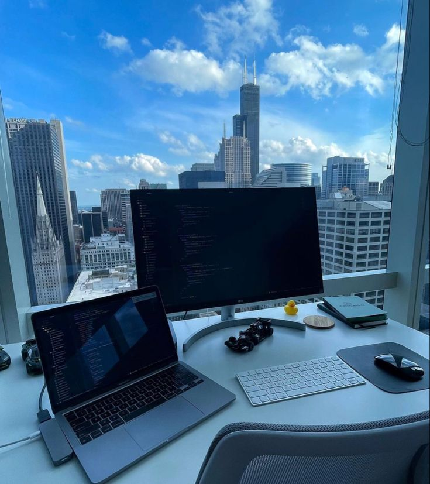

Este es un espacio donde compartiré mis pensamientos, experiencias y conocimientos sobre diversos temas. ¡Espero que lo disfruten!
Escribo este blog porque estoy aprendiendo a programar y este es uno de los primeros pasos que estoy dando en este journey.
Espero lograr dominar una nueva habilidad, la de escribir código, y también espero compartir mis experiencias con otras personas que estén aprendiendo a programar.
En los próximos días estaré aprendiendo CSS y JavaScript, así que estaré compartiendo mis avances en el blog. ¡Estén atentos!
